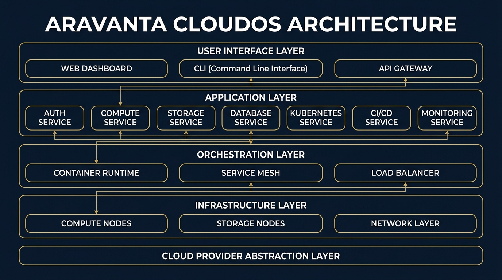
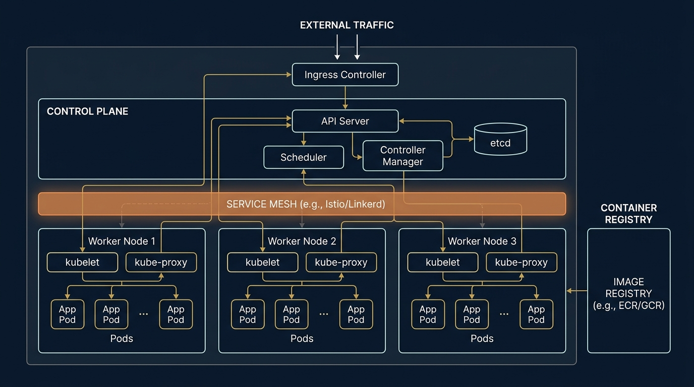
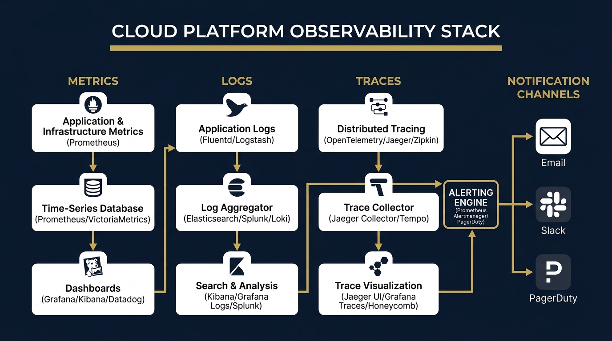
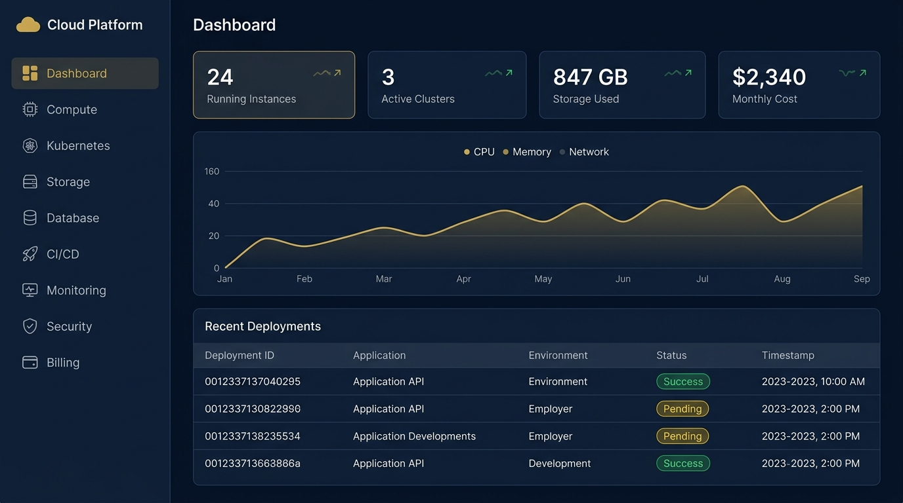
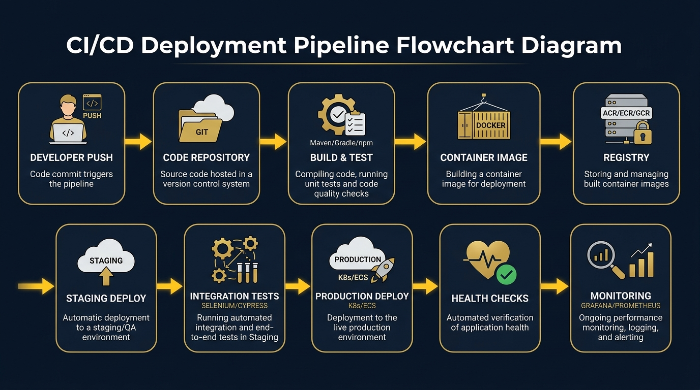
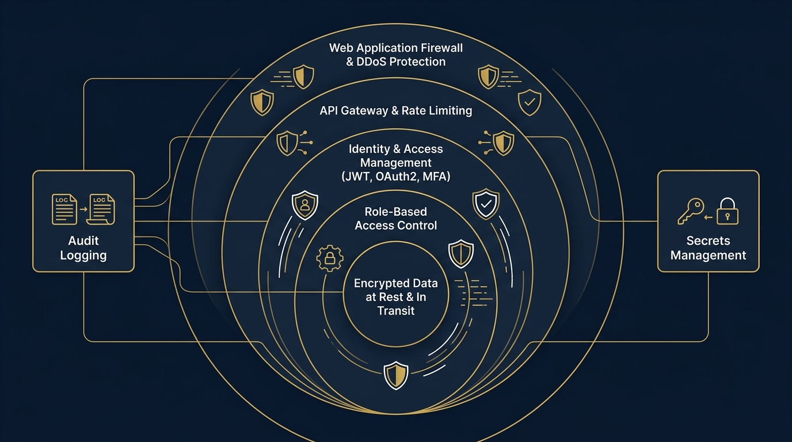

Cloud Operating Platform
An open, self-service cloud operating platform for provisioning infrastructure, deploying cloud-native applications, orchestrating containers, and monitoring workloads — all from a single, unified command center.
Aravanta CloudOS is a production-grade cloud operating platform designed to unify every aspect of modern cloud infrastructure into a single, intuitive experience. It empowers engineering teams to provision resources, deploy applications, manage Kubernetes workloads, automate infrastructure, and gain deep operational visibility — without switching between dozens of disconnected tools.
The modern cloud ecosystem is fragmented. Engineers juggle separate consoles for compute, storage, databases, container orchestration, monitoring, and CI/CD. Each tool has its own learning curve, its own authentication, and its own mental model. Aravanta CloudOS eliminates this fragmentation.
Our mission is to build the "operating system for the cloud" — a platform that abstracts away the complexity of cloud infrastructure while giving engineers full control over their resources. Think of it as what an operating system does for hardware, but for cloud services.
Unlike vendor-locked platforms, Aravanta CloudOS uses a provider-agnostic abstraction layer. All services (ArvCompute, ArvKube, ArvStore, etc.) are Aravanta-native abstractions that can be backed by any cloud provider — giving you portability without sacrificing functionality.
Aravanta CloudOS follows a layered, microservices-oriented architecture. Each layer has clear responsibilities and communicates with adjacent layers through well-defined APIs. This design ensures separation of concerns, independent scalability, and ease of maintenance.

| Layer | Components | Responsibility |
|---|---|---|
| Presentation Layer | Web Dashboard, CLI, Mobile App | User-facing interfaces for interacting with the platform. The web dashboard provides a rich graphical experience; the CLI enables scriptable automation. |
| API Gateway | ArvGateway (Reverse Proxy, Rate Limiter, Auth Middleware) | Single entry point for all API traffic. Handles authentication, rate limiting, request routing, and SSL termination. |
| Application Layer | Auth Service, Compute Service, Kube Service, Storage Service, DB Service, CICD Service, Monitor Service | Domain-specific microservices implementing business logic. Each service owns its data and exposes RESTful APIs. |
| Orchestration Layer | Container Runtime, Service Mesh, Task Scheduler | Manages container lifecycle, inter-service communication, and scheduled workload execution. |
| Infrastructure Layer | Compute Nodes, Storage Backends, Network Fabric | Physical and virtual resources provisioned and managed through the platform's IaC engine. |
| Provider Abstraction | Cloud Provider Adapters | Translates Aravanta service calls into provider-specific API calls, enabling cloud portability. |
Every feature is an API first. The dashboard and CLI are consumers of the same API — ensuring consistency and enabling third-party integrations.
Each domain (compute, storage, auth, etc.) is an independent service with its own database, deployable and scalable independently.
Every request is authenticated and authorized. Service-to-service communication uses mTLS. Secrets are encrypted at rest and in transit.
All services emit structured logs, metrics, and traces. The platform "eats its own dog food" by monitoring itself through ArvWatch.
The provider abstraction layer ensures that switching or multi-homing across cloud providers requires zero application changes.
Infrastructure and application state is version-controlled. Every change flows through Git, is reviewed, and is applied declaratively.
Aravanta CloudOS introduces its own cloud-native service layer — a set of platform-managed services that abstract the underlying cloud provider. These services provide a consistent, Aravanta-branded API regardless of which backend provider powers them.
All Arv* services are Aravanta's own abstractions. They are not re-labeled versions of any specific cloud provider's services. The Provider Abstraction Layer translates Aravanta API calls to the appropriate backend, whether that is a public cloud, private cloud, or bare-metal infrastructure.
ArvCompute provides on-demand virtual machine instances with configurable CPU, memory, and storage profiles. It supports auto-scaling groups, spot/preemptible instances for cost optimization, and instance templates for repeatable provisioning.
| Feature | Description |
|---|---|
| Instance Types | General Purpose, Compute Optimized, Memory Optimized, GPU Accelerated |
| Auto Scaling | Policy-based scaling triggered by CPU, memory, custom metrics, or scheduled events |
| Instance Templates | Reusable configurations for consistent provisioning across environments |
| Health Monitoring | Automatic health checks with self-healing (restart or replace unhealthy instances) |
| SSH Key Management | Platform-managed SSH keys with automatic rotation and audit logging |
| Snapshots | Point-in-time snapshots for backup and disaster recovery |
ArvKube provides fully managed Kubernetes clusters with automated control plane management, worker node scaling, and integrated monitoring. It handles cluster lifecycle operations — creation, upgrades, patching, and decommissioning.

| Feature | Description |
|---|---|
| Cluster Management | Create, update, and delete Kubernetes clusters via API or dashboard |
| Node Pools | Multiple node pools with different instance types per cluster |
| Auto Scaling | Cluster autoscaler and Horizontal Pod Autoscaler (HPA) integration |
| Deployments | Rolling updates, blue-green deployments, and canary releases |
| Service Mesh | Optional Istio/Linkerd integration for traffic management and mTLS |
| Ingress | Built-in ingress controller with TLS termination and path-based routing |
| Helm Support | Native Helm chart repository and one-click chart installations |
ArvStore is a highly durable, scalable object storage service for storing and retrieving any amount of data. It provides bucket-level access policies, versioning, lifecycle rules, and CDN integration for global content delivery.
| Feature | Description |
|---|---|
| Buckets | Logical containers for objects with configurable access policies |
| Versioning | Object versioning for data protection and point-in-time recovery |
| Lifecycle Policies | Automatic transition between storage tiers (hot → warm → archive) |
| Encryption | Server-side encryption (AES-256) with customer-managed or platform-managed keys |
| Presigned URLs | Time-limited URLs for secure, direct file upload/download |
| Event Triggers | Webhooks on object creation, deletion, or modification |
ArvDB offers fully managed database instances with automated backups, patch management, high availability, and read replicas. Supports PostgreSQL, MySQL, and extensible to other engines.
| Feature | Description |
|---|---|
| Supported Engines | PostgreSQL 15+, MySQL 8+, with extensibility for MongoDB and Redis |
| High Availability | Multi-AZ deployments with automatic failover (RPO ≈ 0, RTO < 60s) |
| Automated Backups | Daily snapshots with configurable retention (7–365 days) |
| Read Replicas | Up to 5 read replicas for read-heavy workloads |
| Connection Pooling | Built-in PgBouncer/ProxySQL for efficient connection management |
| Monitoring | Real-time query performance insights, slow query logs, and resource utilization |
ArvRegistry is a fully managed, private Docker container registry that integrates natively with ArvKube and the CI/CD pipeline. It provides vulnerability scanning, image signing, and lifecycle policies for image cleanup.
| Feature | Description |
|---|---|
| Image Storage | Unlimited private repositories with tag-based versioning |
| Vulnerability Scanning | Automatic CVE scanning on push with severity reporting |
| Image Signing | Content trust via Notary/Cosign for supply chain security |
| Lifecycle Policies | Automatic cleanup of untagged or expired images |
| Geo-Replication | Cross-region replication for low-latency pulls |
ArvEdge distributes incoming traffic across healthy backend targets using layer-7 routing rules. It supports path-based routing, host-based routing, weighted targets, SSL/TLS offloading, and WebSocket connections.
| Feature | Description |
|---|---|
| L7 Routing | Path-based, host-based, and header-based routing rules |
| Health Checks | Configurable HTTP/HTTPS health checks with automatic target deregistration |
| SSL/TLS | Automatic certificate provisioning via Let's Encrypt or custom certificates |
| Rate Limiting | Per-IP and per-API-key rate limiting with configurable thresholds |
| DDoS Protection | Built-in DDoS mitigation at the network edge |
ArvWatch provides full-stack observability across the Aravanta CloudOS platform. It collects metrics, aggregates logs, and traces requests across services — powered by Prometheus, Grafana, and Loki under the hood, but exposed through a unified Aravanta interface.

| Pillar | Engine | Capabilities |
|---|---|---|
| Metrics | Prometheus + Grafana | Time-series collection, custom dashboards, PromQL queries, anomaly detection |
| Logs | Loki + Grafana | Structured log aggregation, label-based querying, log-to-trace correlation |
| Traces | OpenTelemetry + Jaeger | Distributed request tracing, latency analysis, service dependency maps |
| Alerts | Alertmanager | Rule-based alerts, multi-channel notifications (Email, Slack, PagerDuty, Webhooks) |
ArvGate is the identity backbone of Aravanta CloudOS. It manages user accounts, service accounts, API keys, roles, policies, and multi-factor authentication. It supports OAuth2/OIDC for federation with external identity providers.
| Feature | Description |
|---|---|
| Authentication | JWT-based tokens with configurable expiry; refresh token rotation |
| MFA | TOTP (Google Authenticator), SMS, and hardware key (FIDO2) support |
| RBAC | Granular role-based access control with predefined roles (Admin, Developer, Viewer, Auditor) |
| Policies | JSON-based policy documents attached to roles (allow/deny actions on resources) |
| Service Accounts | Machine-to-machine authentication for automated workflows and CI/CD |
| SSO Federation | SAML 2.0 and OIDC integration with corporate identity providers |
| Audit Trail | Immutable log of every authentication event, permission change, and API call |
Virtual machines, auto-scaling, instance lifecycle management
Managed clusters, pods, deployments, services, Helm charts
Buckets, versioning, encryption, CDN integration
PostgreSQL, MySQL, HA failover, automated backups
Private image repos, vulnerability scanning, signing
L7 routing, SSL offloading, DDoS protection
Metrics, logs, traces, dashboards, alerting
Auth, MFA, RBAC, SSO, audit logging
While the Aravanta Service Catalog defines the platform's cloud-native services, the Core Modules represent the functional areas of the Aravanta CloudOS user interface and backend systems. Each module maps to one or more Aravanta services.
The Identity module is the security gateway for the entire platform. Every user, service, and automated process must authenticate through ArvGate before accessing any resource.
1. User submits credentials (email + password) → 2. Backend validates against bcrypt hash → 3. If MFA enabled, prompt for TOTP code → 4. Issue JWT access token (15min) + refresh token (7d) → 5. Client stores tokens; attaches to every API request → 6. API Gateway validates JWT signature and claims before routing.
| Role | Permissions | Use Case |
|---|---|---|
| Super Admin | Full access to all resources, users, and settings | Platform owner, CTO |
| Admin | Manage resources, users, deployments; cannot modify billing | Team lead, DevOps lead |
| Developer | Deploy apps, manage own resources, view logs and metrics | Software engineer, SRE |
| Viewer | Read-only access to dashboards, logs, and metrics | Stakeholder, manager |
| Auditor | Read-only access to audit logs, security scans, compliance reports | Security analyst, compliance officer |
The Dashboard is the first screen users see upon logging in. It provides a real-time, at-a-glance view of the entire infrastructure.

The IaC module allows users to define, version, and provision infrastructure using declarative configuration files. Built on top of Terraform with a web-based editor and approval workflow.
Define → Write infrastructure templates in HCL/YAML via the web editor or push from Git
Plan → Generate an execution plan showing resources to create, modify, or destroy
Review → Peer review the plan via approval workflow (optional for non-production)
Apply → Execute the plan and provision resources
Monitor → Track state, detect drift, and trigger remediation
ArvInfra continuously compares the actual state of provisioned resources against the desired state stored in the Terraform state file. When drift is detected (e.g., someone manually modifies a resource outside the platform), the system generates an alert and optionally auto-remediates.

The CI/CD module provides an integrated continuous integration and continuous deployment pipeline that connects source code repositories to production environments.
| Stage | Actions | Failure Behavior |
|---|---|---|
| Source | Git webhook triggers pipeline on push/PR merge | — |
| Build | Compile code, install dependencies, run linters | Pipeline halts; notification sent |
| Test | Run unit tests, integration tests, coverage report | Pipeline halts if coverage < threshold |
| Scan | SAST, dependency vulnerability scan, container image scan | Pipeline halts if critical CVEs found |
| Package | Build Docker image, tag with Git SHA, push to ArvRegistry | Pipeline halts; build artifacts preserved |
| Stage | Deploy to staging environment, run smoke tests | Automatic rollback to previous version |
| Production | Canary deploy (10% → 50% → 100%), health checks | Automatic rollback; incident created |

Encrypted key-value store for API keys, database credentials, certificates. Supports automatic rotation and version history.
Immutable, tamper-proof audit trail of every user action, API call, and resource change. Retained for 365 days.
Automated checks against CIS Benchmarks, SOC 2, and ISO 27001 controls. Generates compliance reports on demand.
Continuous scanning of container images, dependencies, and infrastructure configurations for known vulnerabilities.
The Billing module provides granular cost visibility and optimization recommendations across all Aravanta services.
| Technology | Purpose | Rationale |
|---|---|---|
| React 18+ | UI component library | Component-based architecture, virtual DOM, massive ecosystem |
| TypeScript | Type safety | Catch errors at compile time, better IDE support, self-documenting code |
| Tailwind CSS | Styling | Utility-first CSS for rapid, consistent UI development |
| React Router v6 | Client-side routing | Declarative routing with nested layouts and lazy loading |
| TanStack Query | Server state management | Caching, background refetching, pagination, optimistic updates |
| Zustand | Client state management | Lightweight, minimal boilerplate, excellent DX |
| Recharts | Data visualization | React-native charting for metrics dashboards |
| Vite | Build tooling | Lightning-fast HMR, optimized production builds |
| Technology | Purpose | Rationale |
|---|---|---|
| Python 3.11+ | Primary language | Rich cloud/infra library ecosystem, rapid development, wide adoption |
| FastAPI | Web framework | Async-first, auto-generated OpenAPI docs, Pydantic validation, high performance |
| SQLAlchemy 2.0 | ORM | Mature, flexible, supports async with asyncpg |
| Alembic | Database migrations | Version-controlled schema changes, rollback support |
| PostgreSQL 15+ | Primary database | ACID compliance, JSONB support, advanced querying, proven at scale |
| Redis 7+ | Caching & sessions | In-memory performance, pub/sub, rate limiter backend |
| Celery | Task queue | Distributed async task execution for long-running operations |
| RabbitMQ | Message broker | Reliable message delivery, dead-letter queues, priority queues |
| Technology | Purpose | Rationale |
|---|---|---|
| Docker | Containerization | Consistent environments, dependency isolation, lightweight |
| Kubernetes | Container orchestration | Industry standard for running containerized workloads at scale |
| Terraform | Infrastructure as Code | Declarative, multi-provider, state management, plan/apply workflow |
| Nginx | Reverse proxy | High-performance request routing, SSL termination, static file serving |
| GitHub Actions | CI/CD | Native GitHub integration, YAML-based workflows, marketplace actions |
| Prometheus | Metrics collection | Pull-based model, PromQL, alerting rules, extensive exporters |
| Grafana | Dashboards | Rich visualization, data source plugins, alerting |
| Loki | Log aggregation | Lightweight, label-based indexing, Grafana integration |
Aravanta CloudOS exposes a RESTful API that powers both the web dashboard and the CLI. All endpoints require authentication via JWT bearer tokens issued by ArvGate.
Base URL: https://api.aravanta.cloud/v1
Content-Type: application/json
Authentication: Authorization: Bearer <JWT_TOKEN>
Pagination: ?page=1&limit=25 (default: 25 items per page)
Rate Limit: 1,000 requests/minute per API key
/auth/register — Register a new user account
{
"email": "user@example.com",
"password": "secureP@ssw0rd!",
"full_name": "Jane Doe",
"organization": "Aravanta Corp"
}/auth/login — Authenticate and receive JWT tokens
// Request
{ "email": "user@example.com", "password": "secureP@ssw0rd!" }
// Response (200 OK)
{
"access_token": "eyJhbGciOiJSUzI1NiIs...",
"refresh_token": "dGhpcyBpcyBhIHJlZnJl...",
"token_type": "bearer",
"expires_in": 900
}/auth/refresh — Refresh an expired access token
/auth/mfa/enable — Enable multi-factor authentication
/auth/mfa/verify — Verify MFA code during login
/compute/instances — List all compute instances
/compute/instances — Create a new compute instance
{
"name": "web-server-01",
"instance_type": "arv.general.medium", // 4 vCPU, 8GB RAM
"image": "ubuntu-22.04-lts",
"region": "arv-us-east-1",
"ssh_key_id": "key-a1b2c3d4",
"tags": { "env": "production", "team": "backend" }
}/compute/instances/{id} — Get instance details
/compute/instances/{id}/scale — Resize instance type
/compute/instances/{id} — Terminate an instance
/kubernetes/clusters — List Kubernetes clusters
/kubernetes/clusters — Create a new managed cluster
{
"name": "prod-cluster",
"kubernetes_version": "1.30",
"node_pools": [
{
"name": "general-pool",
"instance_type": "arv.compute.large",
"min_nodes": 3,
"max_nodes": 10,
"auto_scale": true
}
],
"region": "arv-us-east-1",
"network_policy": "calico"
}/kubernetes/clusters/{id}/pods — List pods in a cluster
/kubernetes/clusters/{id}/deployments — List deployments
/kubernetes/clusters/{id}/deployments — Create a deployment
/storage/buckets — List all storage buckets
/storage/buckets — Create a new bucket
/storage/buckets/{name}/objects — List objects in bucket
/storage/buckets/{name}/upload — Upload an object
/databases/instances — List database instances
/databases/instances — Provision a new database
{
"name": "prod-postgres",
"engine": "postgresql",
"engine_version": "15.4",
"instance_type": "arv.db.medium", // 4 vCPU, 16GB RAM
"storage_gb": 100,
"high_availability": true,
"backup_retention_days": 30,
"region": "arv-us-east-1"
}/monitoring/metrics — Query time-series metrics
/monitoring/alerts — List active alerts
/security/audit-logs — Query audit log entries
/security/secrets — List secrets (metadata only)
/security/secrets — Create or update a secret
/billing/usage — Get current billing usage
/billing/invoices — List past invoices
The Aravanta CloudOS monorepo is organized for clarity, separation of concerns, and CI/CD efficiency.
Local Dev (Docker Compose) →
CI (GitHub Actions: lint, test, scan, build) →
Staging (auto-deploy on merge to develop) →
Production (manual approval + canary deploy on merge to main)
# Clone the repository
git clone https://github.com/aravanta/cloudos.git
cd cloudos
# Start all services locally
docker-compose -f docker/docker-compose.yml up -d
# Backend runs at → http://localhost:8000
# Frontend runs at → http://localhost:3000
# Grafana runs at → http://localhost:3001
# Prometheus runs at → http://localhost:9090
# Run database migrations
cd backend && alembic upgrade head
# Seed sample data
python scripts/seed.pyAravanta CloudOS follows the three pillars of observability — Metrics, Logs, and Traces — unified under ArvWatch. The platform "eats its own dog food" by using the same monitoring stack to observe itself.
| Component | Role |
|---|---|
| Prometheus | Scrapes metrics from application endpoints (/metrics) every 15s |
| Node Exporter | Exposes host-level metrics (CPU, memory, disk, network) |
| cAdvisor | Container-level metrics (resource usage per container) |
| Grafana | Visualization dashboards with customizable panels |
| Alertmanager | Rule-based alerts with deduplication and routing to notification channels |
| Metric | Alert Threshold | Severity |
|---|---|---|
| CPU Utilization (per instance) | > 85% for 5 minutes | Warning |
| Memory Usage (per pod) | > 90% of limit | Critical |
| API Response Time (p99) | > 2 seconds | Warning |
| Error Rate (5xx responses) | > 1% of total requests | Critical |
| Disk Usage | > 80% capacity | Warning |
| Pod Restart Count | > 3 restarts in 10 minutes | Critical |
| Certificate Expiry | < 30 days remaining | Info |
All application logs are structured as JSON and shipped to Loki via Promtail. Each log entry includes:
{
"timestamp": "2026-07-31T14:22:01.432Z",
"level": "INFO",
"service": "compute-service",
"trace_id": "abc123def456",
"span_id": "789ghi012",
"user_id": "usr_4a9b2c",
"message": "Instance web-server-01 started successfully",
"metadata": {
"instance_id": "i-0a1b2c3d4e",
"region": "arv-us-east-1",
"instance_type": "arv.general.medium",
"duration_ms": 4520
}
}Security in Aravanta CloudOS follows a defense-in-depth strategy. Multiple independent security layers ensure that the compromise of any single layer does not expose the entire system.
| Layer | Protection | Implementation |
|---|---|---|
| Edge Protection | DDoS mitigation, WAF, bot detection | ArvEdge with rate limiting and IP reputation scoring |
| API Gateway | Authentication, rate limiting, request validation | Nginx + custom middleware; JWT validation on every request |
| Application | Input validation, SQL injection prevention, XSS prevention | Pydantic schemas, parameterized queries, CSP headers |
| Service-to-Service | Mutual TLS, service identity verification | mTLS via service mesh; each service has unique identity certificate |
| Data | Encryption at rest, encryption in transit | AES-256 for storage; TLS 1.3 for all network communication |
| Secrets | Encrypted secret storage, automatic rotation | HashiCorp Vault integration; secrets injected as environment variables |
Automated evidence collection for SOC 2 controls. Continuous monitoring ensures ongoing compliance.
Automated scanning against CIS Kubernetes, Docker, and Linux benchmarks with remediation guidance.
Data residency controls, right-to-erasure workflows, and data processing audit trails.
On-demand compliance reports with exportable evidence packages for auditors.
Aravanta CloudOS is not just a dashboard — it's a cloud operating system. Just as Linux abstracts hardware into a programmable interface, Aravanta CloudOS abstracts cloud infrastructure into a platform that developers can interact with through a unified API, a beautiful UI, and declarative configuration.
The vision is to become the single pane of glass for modern infrastructure — whether you're running a side project on a single server or managing hundreds of microservices across multiple regions.
Aravanta CloudOS — A production-grade cloud operating platform featuring a unified web dashboard for provisioning compute instances (ArvCompute), managing Kubernetes clusters (ArvKube), orchestrating containers (ArvRegistry), storing objects (ArvStore), managing databases (ArvDB), automating infrastructure via IaC, and monitoring workloads (ArvWatch). Built with React, TypeScript, Python/FastAPI, PostgreSQL, Docker, Kubernetes, and Terraform. Implements JWT + OAuth2 authentication with MFA, granular RBAC, encrypted secrets management, CI/CD pipelines, real-time monitoring (Prometheus/Grafana/Loki), and cost management — all through provider-agnostic Aravanta service abstractions.